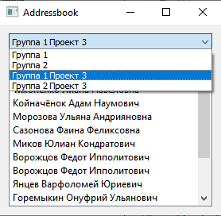

Addressbook viewer is GUI a C++ program using Qt framework for drawing and straightforward manipulation that join predefined corresponding rows between two Sqlite database tables. Based on the model/view architecture. Read detailed description of a program.
User interface design snapshot

- Database schema
CREATE TABLE prj_group ( prj_group_id INTEGER PRIMARY KEY AUTOINCREMENT NOT NULL, project_id INTEGER NOT NULL, name TEXT NOT NULL, CONSTRAINT fk_prj_group_project_1 FOREIGN KEY (project_id) REFERENCES project (project_id) ON DELETE CASCADE ON UPDATE CASCADE, ); CREATE TABLE prj_group_addrbook ( prj_group_addrbook_id INTEGER PRIMARY KEY AUTOINCREMENT NOT NULL, prj_group_id INTEGER NOT NULL DEFAULT 0, family TEXT, first_name TEXT, second_name TEXT, CONSTRAINT fk_prj_group_addrbook_prj_group_1 FOREIGN KEY (prj_group_id) REFERENCES prj_group (prj_group_id) ON DELETE CASCADE ON UPDATE CASCADE, );
Caveats
- Read only mode. Editing is not suggested.
- No tracking database changes during application running.
Getting Started
These tiny instructions will help you build project and running on your computer.
Short way is using Qt Creator.
Requirements
Qt 5.12
Installing
Generate a makefile.
Makefiles are generated from the '.pro' files like this:
qmake -o Makefile Addressbook.pro
Run make
make
Usage
Run
Built With
- SqliteStudio - Used to generate database
Contributing
Pull requests are welcome.
Authors
- Denis Vasilenko - Initial work - tuxtender
License

GNU GENERAL PUBLIC LICENSE
Version 3, 29 June 2007
This program is free software: you can redistribute it and/or modify it under the terms of the GNU General Public License as published by the Free Software Foundation, either version 3 of the License, or (at your option) any later version.
This program is distributed in the hope that it will be useful, but WITHOUT ANY WARRANTY; without even the implied warranty of MERCHANTABILITY or FITNESS FOR A PARTICULAR PURPOSE. See the GNU General Public License for more details.
You should have received a copy of the GNU General Public License along with this program. If not, see https://www.gnu.org/licenses/.